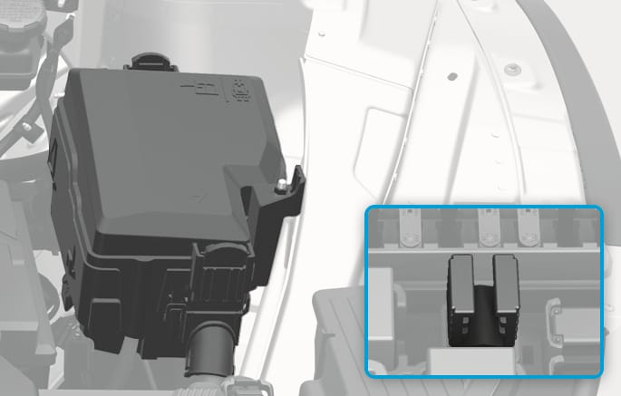

퓨즈 교체용 클립
퓨즈 교체용 클립(퓨즈 뽑개)은 모터룸 퓨즈 박스 내부에 고정되어 있습니다.

2C_EngineRoomFuseReplacement_1
드라이버나 금속 물체를 사용해 퓨즈를 제거하지 마십시오. 합선 등으로 인해 전기 장치에 심각한 손상이 발생할 수 있습니다.
퓨즈 교체용 클립(퓨즈 뽑개)은 모터룸 퓨즈 박스 내부에 고정되어 있습니다.

2C_EngineRoomFuseReplacement_1
드라이버나 금속 물체를 사용해 퓨즈를 제거하지 마십시오. 합선 등으로 인해 전기 장치에 심각한 손상이 발생할 수 있습니다.